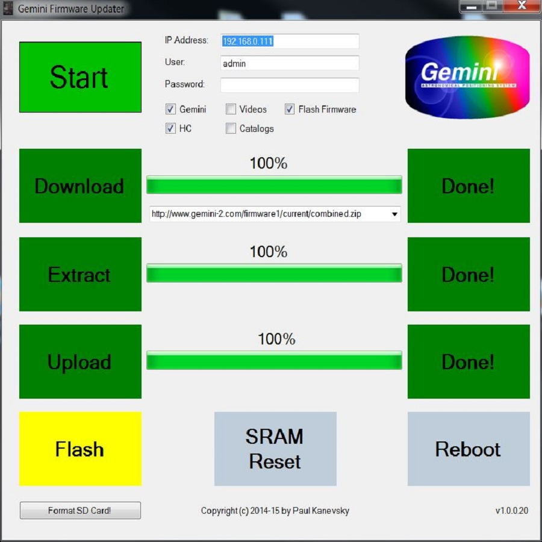
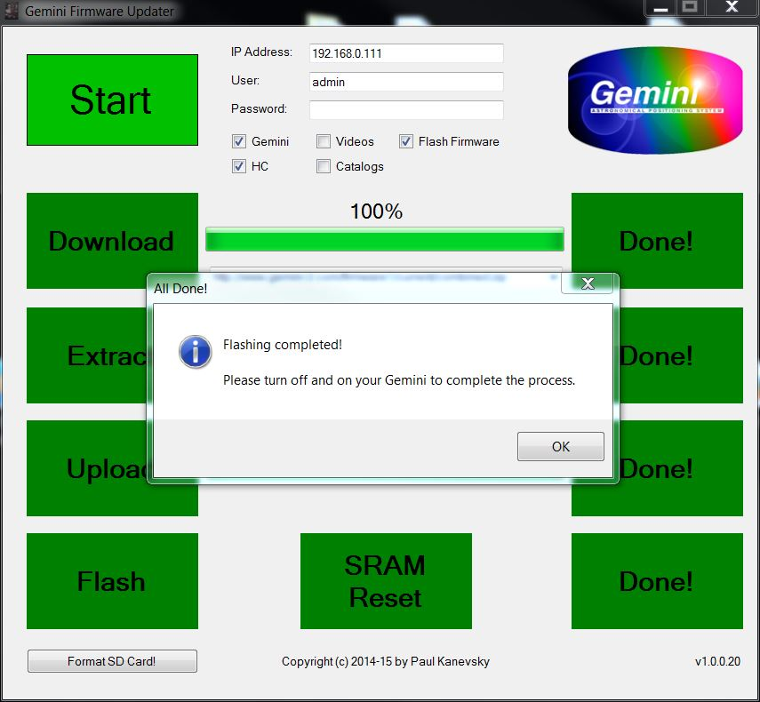
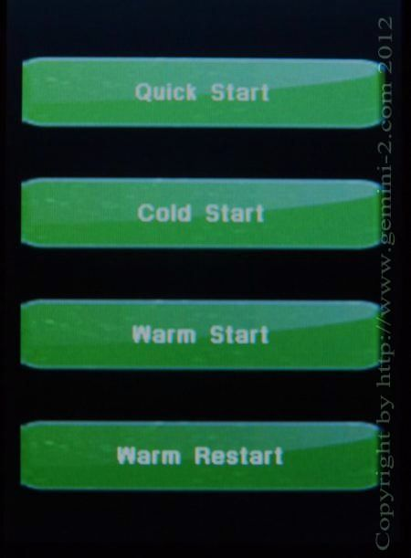

Image 3
| Updating Firmware with the Gemini Firmware Updater Program for Windows |
| Download the latest version of GFU here |
| Paul Kanevsky has donated his valuable time and effort to provide the Gemini-II community with the ASCOM Gemini.net driver. Now he has done it again with the Gemini Firmware Updater. We all owe Paul much gratitude. Paul does not
write code for the MAC or other computers, so please don't ask him too. Also Paul is like me, he is not associated with Losmandy in any way, and is freely donating his time and knowledge to help fellow Gemini users. We should
all thank Paul for doing this. Also Paul only wanted to spend a minimum amount of time developing this utility. He has already expended much more time that he ever expected to in it's development and testing. So please
no asking for changes to the utility. If you want changes, the source code is provided at:
https://github.com/pkastro/gfu If you have any error situations, Please capture any screen error messages and forward them to the Gemini-II Users Group. Windows 7, 8.1 and 10 does have the snipping tool. Just put Snipping Tool in the Search box. It should be the top entry. Use it to capture a jpg of the error please. If you are having problems updating firmware using GFU, you can always try the manual method to rebuild the micro-SDcard. Please read all the instructions before starting. This program will: 1. Download the latest https://gemini-2.com/firmware1/combined.zip from Losmandy website. 2. Extract all the files from the archive to a temporary directory. %appdata%\Roaming\GFU for Win7 3. Uses FTP to send all the files to Gemini (you can choose to send only the main SD card files, Hand Controller Files, Video, hand controller catalogs or all the firmware that is supplied in the combined.zip file.) 4. Store all setting before flashing the new firmware and then restores them after the flashing is completed. 5. Optionally flashes the uploaded firmware, resets SRAM and reboots Gemini 6. Optionally updates the catalog files in the hand controller. (Click Catalogs to do this.) 7. Optionally updates the Video Files Scott Losmandy has provided. Please note that if you select this option, the upload portion will slow down at about 94%. This is where it starts uploading the video files and they are large compared to the other files. Just be patient, and don't worry, this is normal. You can also select other files to update the Gemini-2 with besides the default combined.zip file. YOU must normally be connected to the Internet, and the Gemini-II via Ethernet with the same computer, with the Gemini-II turned on, for this program to work. You will also need to know the IP address that your Gemini-2 is using to connect to the Computer. You can find this on the Web interface on the "Network" tab or on the hand controller by going to: Menu-->Mount-->Network, or Menu-->System-->Network. You can keep the hand controller plugged in if you wish. The motors can be disconnected with no damage to the Gemini-2. To keep the Gemini-2 from complaining, if you remove the motors you might want to make the tracking speed Terrestrial speed using the Functions tab of the Web interface or "MENU"-->"Track"-->"Terrestrial" on the hand controller. Don't forget to put it back to Sidereal Tracking after the update. Also if you have multiple Gemini-2 units, please make sure only one is turned on and you are using the IP address of that unit with the utility. You also need Net Framework 4.0 or above to install the program. If you are running Windows 8 or 8.1 you will need Net Framework 4.51 if it is not already installed on your computer. I noticed that not all the features of Net Framework 4.51 was not enabled on Windows 10, you should enable them by thes instructions: a) Press “Windows Logo” + “R” keys on the keyboard. b) Type “appwiz.cpl” in the “Run” command box and press “ENTER”. c) In the “Programs and Features” window, click on the link “Turn Windows features on or off”. d) Check if the “.NET Framework 4.5 (includes .NET 2.0 and 3.0)” option is available in it. e) If yes, then enable it and then click on “OK” f) follow the rest of the instructions. |
|
Click on
GFU.zip to download the program. You will have to put it in a directory of your choice and then unzip it, and then run the "Setup.exe" program, not the "GFUInstall.msi".
See
GFU_Install
movie. Note: To only update to the latest Web interface, Check the Gemini box, and Video box, Un-Check the HC box, Un-Check the Catalogs box, and Un-Check the Flash box on the GFU configuration menu. |
|
Please follow all the install prompts, and once Gemini Firmware Updater is installed, please open it up by clicking on it's Icon
on your desktop. You should see the program below come up. Here is a Video of running the
Gemini Firmware Update
program. |
Now please make sure that the IP address is what your Gemini-2 uses. Also note that there are five check blocks.
|
|
Image 3 |
Now Please hit the Start Button: PLEASE DO NOT HIT ANY OTHER BUTTONS UNTIL PROMPTED TO DO SO. DOING SO CAN KEEP THIS UTILITY FROM FINISHING WITH THE DESIRED FIRMWARE BEING UPLOADED AND FLASHED INTO THE GEMINI-2. THIS UTILITY IS NOT CURIOUS-PROOF. See image 4 |
 Image 4 |
| The Firmware will be downloaded: See Image 5 |
 Image 5 |
| Then the downloaded file will be Extracted: See image 6 |
 Image 6 |
| Then the firmware will be uploaded to the Gemini 2. See image 7 |
 Image 7 |
| Now after all the files are uploaded to the Gemini 2, a message will ask you if you want to Flash the firmware into the processor. Please Select the Yes button. See image 8. The Flash takes about 2 minutes, so please be patient while the Gemini-2 is flashing the firmware into the main processor. |
 Image 8 |
|
 Image 9 |
| The Flash button will turn Yellow indication the Gemini processor is being flashed with the new firmware. See Figure 9 |
| Once the Firmware is flashed, the Sram is reset, and a reboot is done, then you will receive a message to turn off your Gemini-II and then back on. This will then start the Hand Controller updating. See Image 10 |
|
 Image 10 |
| Please note that is GFU times out after the SRAM Reset, With an error message, it probably do to the IP address being changed by the Flashing of Firmware. Just turn off your Gemini-2 and repower it back on. You can check to see if it flashed the firmware after the hand controller updates to confirm everything went OK |
Please Turn off your Gemini 2 and then turn it back on. All the files for the hand controller will then start to be uploaded to the hand controller. You should see messages on the hand controller that this is happening. When this upload is done, then the firmware update is complete. Please do not turn off the Gemini-2 while the Hand Controller is updating. Wait till it presents one of the following screens please. Please NOTE: After you turn off your Gemini-2 and turn it back on, the GFU program has no control of the Hand controller update. The Gemini-2 does this update by moving any files in the HCFirrmware directory on the main units micro-SDCard to the hand controller using a serial protocol. If you never get one of these screens and the hand controller just sits at the "Connecting to Gemini" message, then the upload to the hand controller probably went bad. Please let us know on the Gemini-2 Users Group so we can help. |
|  |
If after updating the hand controller, please recalibrate the hand controller. If you do not it is possible that it's buttons will change the languages and be all messed up. The touch pad menu comes up for about 1 second after the hand controller is powered up. Touch it while it is showing and follow the instructions. More instructions are here. |
Now if you did not select the catalogs check box, and do want to upload the catalogs to your hand controller, then please uncheck, Gemini, Flash Firmware, Video and the HC box. Check the catalogs box, and then hit the start button again. There is no need to close the Gemini Firmware updat program. After the catalogs are uploaded, (The upload box turns Green), Turn off your Gemini 2 and then turn it back on. All the files for the hand controller will then start to be uploaded to the hand controller. When this upload is done, then the catalogs will be uploaded to the hand controller. Congratulations. |
Now lets make sure that the firmware was flashed into the Main processor. Please go to Menu-->HC-->INFO. The dates is what you look at. The Main board firmware date should be March 12 2017. If it is not then you will have to REDO the GFU program, but only CHECK "Gemini" and "Flash Firmware" at the top of the selection page. (Assuming that the first time through GFU, the hand controller was updated and has a March 12 2017 date.) At the bottom of the GFU selection page select "Format SD Card" Once in a while a file is left on the micro-SDcard that will not let the GFU program flash the firmware into the main processor. Formatting the micro SDcard gets rid of it. It will also delete the store configure file that you may have created. Once the micro SDcard is FORMATED, the start over and do GFU again with only "Gemini" and "Flash Firmware" checked. |